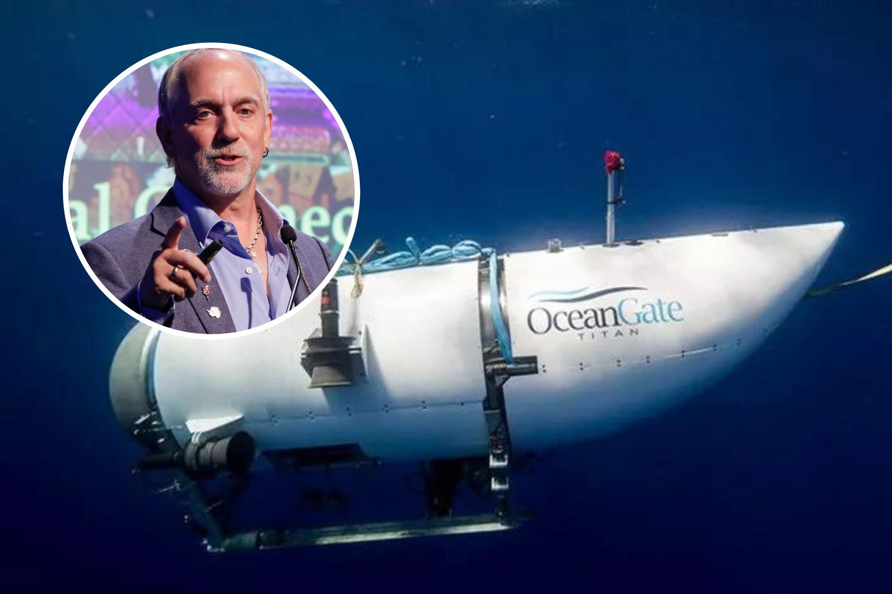

Titanic Sub Rescue Team Gets New Vessel at Eleventh Hour-'Improved the Odds'The arrival of a specialist remotely operated vehicle (ROV) in the search for a missing submersible at the wreck of the Titanic has "improved the odds of a positive outcome," the president of The Explorers Club has said. Richard Garriott, the head of the thrill-seekers organization, had previously expressed concern that the deep-sea exploration unit had not been utilized earlier in the search. He said on Wednesday in the National Geographic that U.S. Coast Guard red tape had held up its deployment. On Thursday morning, the BBC reported that a U.S. Air Force C-17 Globemaster had landed in Jersey, U.K, to collect the Argus ROV, owned by British deep-sea mapping company Magellan. On Sunday, the Titan submersible went missing while traveling towards the shipwreck of the notorious steam liner with five people on board, including two members of The Explorers Club: Hamish Harding, a British billionaire and adventurer, and Paul-Henry Nargeolet, a former French Navy diver who works for a company that owns the salvage rights to the Titanic. The submersible lost contact with the Polar Prince surface ship and in the days since search-and-rescue workers have been unable to locate the missing vessel. There is added complexity to the rescue operation. The Titanic wreckage sits at around 12,500 feet below sea level—far lower than most submersibles can travel. According to OceanGate, Titan's owner, the submersible is only one of five submersibles in the world able to reach that far down. At the depth it was traveling to, the sea exerts around 400 bar of pressure while one bar is experienced at around sea level. It is unclear what may have happened to the submersible. Some fear a structural failure could have led to an implosion, while others say it may have become trapped in the wreckage or experienced an electrical fault that has prohibited it from communicating. The U.S. Coast Guard estimates that there are a few hours of oxygen left on board the vessel, making the search ever-more pressing. Captain Jamie Frederick said in a press conference on Wednesday that those conducting the search-and-rescue operation remained "100 percent" hopeful of saving Titan's passengers. The Magellan ROV was used to scan the Titanic shipwreck in the summer of 2022, and the team has detailed knowledge of the area, the BBC reported. Confirming that the Magellan ROV was en route to the wreck site, Garriott wrote in a tweet on Thursday morning that "we have importantly improved the odds of a positive outcome though our advice, volunteering of services and equipment, and even the political pressure we continue to bring to bear." He added that use of the unmanned explorer "should have been accepted sooner" and that The Explorers Club was still working to secure sonar and other equipment. Newsweek approached the U.S. Coast Guard via email for comment on Thursday. The National Geographic reported on Wednesday that Garriott wrote to U.S. Navy officials that afternoon, saying Magellan had "received mixed signals" before being "told to stand down." Magellan stated publicly that it was contacted by OceanGate on Monday, and asked the company to "use the means necessary to fly the needed equipment and crew to St. John's, Newfoundland as soon as possible, stating time is of the essence." In a press conference on Wednesday, Sean Leet, chair of the company that owns the Polar Prince, Horizon Maritime Services, said the rescue operation, including procuring equipment, had been "done flawlessly" and that the team was "very aware of the time sensitivity around this mission." There are several ROVs already searching for the submersible, but those are not capable of rescuing Titan if one were to find the vessel. Alongside Harding and Nargeolet, among those on board are OceanGate CEO Stockton Rush, British-Pakistani businessman Shahzada Dawood and his son, Suleman. |
 |